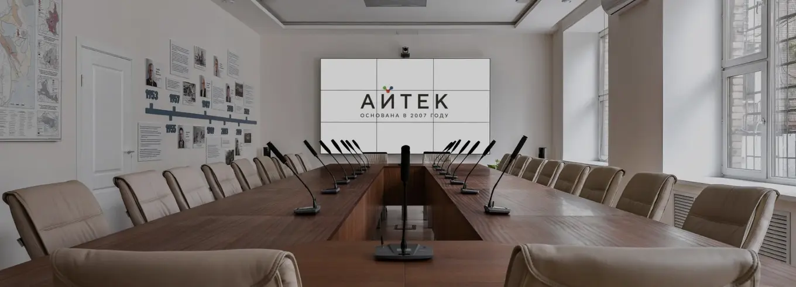

Федеральный исследовательский центр
Апатиты · 60 рабочих дней
Комплексное оснащение конференц-зала в городе Москва

Стоимость и срок указаны для этого объекта. Смета нового проекта зависит от помещения, комплектации и состава работ.
Всероссийский научно-исследовательский геологический нефтяной институт поставил перед ГК Айтек задачу комплексного оснащения мультимедийным оборудованием конференц-зала. Зал должен быть оснащён современным оборудованием с соблюдением всех требований, предъявляемых к такого рода помещениям. В зале должны на высоком техническом уровне проводиться совещания, доклады, видеоконференции, лекции и защиты научных диссертаций.
Специалистами ГК Айтек был успешно завершён проект по комплексному оснащению объекта современным мультимедийным оборудованием под ключ. В ходе реализации проекта был произведён весь спектр работ — от поставки оборудования и разработки проектной документации до финальной отладки систем. Состав реализованного комплекса: Видеостена 3х3, состоящая из 9 тонкошовных панелей 55" Звуковые врезные потолочные системы Конференц-система для интерактивного взаимодействия во время семинаров и групповых сессий Камеры захвата с умным наведением на активного спикера Скрытая многоуровневая коммутация Централизованное управление всем оборудованием с единого пульта
В рамках данного проекта силами ГК Айтек были осуществлены все необходимые работы по проектированию, монтажу и пусконаладке оборудования. Работы проводились в рамках существующего ремонта.
Для отображения видео контента перед аудиторией в конференц-зале установлена видеостена из 9-и тонкошовных профессиональных панелей. Размеры видеостены составляют 3,6 м по ширине и 2 м по высоте, а разрешение составляет более 4К пикселей.
Озвучивание зала осуществляется посредством 8-ми потолочных акустических систем. В результате проведённого электроакустического расчёта удалось добиться высокой разборчивости речи и равномерного распределения звукового давления по всей площади зала. Устранение акустической обратной связи при работе настольных микрофонов осуществляется посредством цифровой обработки звукового сигнала.
Каждое рабочее место за столом переговоров снабжено беспроводным настольным микрофонным пультом. Микрофон такого пульта включается посредством кнопки или голоса говорящего. Микрофонный пульт председателя снабжён дополнительными функциями для управления дискуссией.
Для проведения видеоконференций в зале присутствуют 2-е поворотные видеокамеры. Они могут показывать аудиторию с разных ракурсов. Показ может осуществляться крупным планом, а также видеокамера может быть наведена на говорящего в автоматическом или ручном режимах посредством пульта управления.
Источником контента в системе конференц-зала служит ПК оператора. Он вместе с оборудованием обработки звуковых и видеосигналов располагается в рэковом шкафу.
Для стабильной работы и защиты оборудования от скачков напряжения в системе установлен источник бесперебойного питания.
Управление всем комплексом оборудования, а именно основными функциями всех устройств, осуществляется с помощью системы "умного дома" через ПК оператора. Для данного Заказчика было написано специализированное ПО с графическим интерфейсом, с помощью которого управление всеми функциями устройств настолько лёгким, что с этим может справиться любой неподготовленный специалист.
В бриф перейдут выбранный проект, тип помещения и бюджет примера. Все параметры можно изменить.